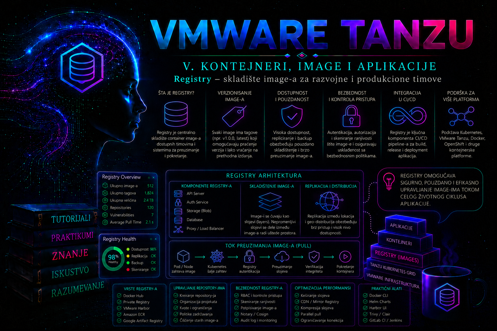

VMware & Tanzu

Uloga registry-ja u životnom ciklusu aplikacije
Container registry je servis za kontrolisano skladištenje, distribuciju i upravljanje kontejnerskim image-ima i drugim OCI artefaktima. Ranije lekcije postavile su infrastrukturne preduslove klastera, mreže i trajnog skladištenja; ova lekcija prelazi na kontrolisanu distribuciju izvršnih artefakata. Registry čini image dostupnim build sistemima, administratorima i Kubernetes klasterima kroz standardizovani API. Bez registry-ja tim može lokalno da napravi image, ali ne može pouzdano da ga prenese kroz razvojno, testno i produkciono okruženje.
U tipičnom enterprise toku CI sistem napravi image, dodeli mu tag, pošalje ga u registry i zabeleži njegov digest. Sistem za skeniranje proverava poznate ranjivosti, politika određuje da li je artefakt dozvoljen, a Kubernetes čvorovi ga zatim preuzimaju pri pokretanju podova. Registry zato nije običan direktorijum sa arhivama. On je kontrolna tačka lanca isporuke softvera.
Komunikacija se najčešće odvija prema OCI Distribution Specification protokolu. Klijent proverava dostupnost registry-ja, autentifikuje se, pronalazi manifest, preuzima konfiguraciju i potrebne slojeve, a zatim lokalni container runtime rekonstruiše image. Slojevi koji već postoje na čvoru ne preuzimaju se ponovo, što smanjuje mrežni saobraćaj i ubrzava pokretanje workload-a.
U Tanzu okruženju registry može biti implementiran kao Harbor, kao drugi OCI kompatibilan proizvod u lokalnom data centru ili kao upravljani cloud servis. Harbor je naročito značajan zato što, pored osnovnog čuvanja artefakata, obezbeđuje projekte, korisničke uloge, robot naloge, kvote, retention pravila, replikaciju, audit evidenciju, proxy cache i integraciju sa skenerima ranjivosti. Tačan način instalacije i skup podržanih funkcija zavise od izdanja Tanzu platforme, Harbor verzije i modela implementacije.
Registry, repository, artefakt, tag i digest
Administrator mora precizno razlikovati nivoe adresiranja jer se veliki broj incidenata javlja zbog pogrešnog imena, projekta ili taga. U referentnom primeru koristi se adresa:
harbor.platforma.example/apps-prod/web-portal:1.4.0- Registry je serverska adresa
harbor.platforma.example. - Projekat je Harbor organizaciona i bezbednosna granica
apps-prod. - Repository je kolekcija verzija jednog artefakta, u ovom slučaju
web-portal. - Tag je čitljiva oznaka, ovde
1.4.0. Tag je pokazivač i, ako politika to dozvoljava, može biti premešten na drugi digest. - Digest je sadržajno određen identifikator, na primer
sha256:.... Promena bilo kog dela manifesta proizvodi drugi digest.
Za razvoj su tagovi praktični jer ljudi lakše rade sa oznakama kao što su 1.4.0, build-4821 ili main-7f8c2ad. Za produkcionu sledljivost digest je pouzdaniji zato što nedvosmisleno određuje sadržaj. Dobra praksa je da CI proces objavi jedinstveni tag, sačuva vraćeni digest i da produkciona konfiguracija referencira odobreni artefakt po digestu ili koristi nepromenljive tagove čiju izmenu registry zabranjuje.
Tag latest nema posebno tehničko značenje osim što ga pojedini klijenti podrazumevaju kada tag nije naveden. On ne garantuje da je image nov, testiran ili odobren. U produkciji otežava audit, rollback i utvrđivanje tačno pokrenute verzije, pa ga ne treba koristiti kao identitet izdanja.
Arhitektura enterprise registry servisa
Produkcioni registry mora se posmatrati kao distribuirani servis sa sopstvenim zavisnostima. Harbor implementacija obično sadrži API i portal, registry servis za OCI operacije, bazu podataka za metapodatke, Redis za privremeno stanje i redove poslova, job service za asinhrone zadatke, skladište blobova, skener ranjivosti i opcioni servis za potpisivanje ili dodatne integracije. U zavisnosti od načina instalacije komponente mogu raditi kao kontejneri na zasebnoj virtuelnoj mašini ili kao workload-i u Kubernetes klasteru.
Skladište može biti lokalni filesystem, NFS ili podržano objektno skladište. Izbor utiče na dostupnost, performanse, backup i proceduru oporavka. Registry baza čuva projekte, politike, korisnike, rezultate poslova i druge metapodatke, dok se stvarni slojevi image-a nalaze u blob skladištu. Backup samo baze ili samo blobova nije dovoljan za konzistentan oporavak.
TLS je obavezan za produkcionu upotrebu. Sertifikat mora odgovarati DNS imenu registry-ja, lanac poverenja mora biti poznat build agentima, administratorskim stanicama i svim Kubernetes čvorovima, a vreme na sistemima mora biti sinhronizovano. Dodavanje opcije za preskakanje TLS provere nije prihvatljiva zamena za ispravan sertifikat. Takva prečica pretvara problem poverenja u trajni rizik presretanja saobraćaja i krađe kredencijala.
Visoka dostupnost zahteva više od pokretanja dve replike portala. Potrebni su dostupni load balancer, zajedničko ili distribuirano skladište, pouzdana baza, podržan način rada svih stateful komponenti, ispravan DNS i testiran oporavak. Registry koji je nedostupan možda neće odmah zaustaviti već pokrenute podove jer image može postojati u lokalnom cache-u čvora. Problem postaje vidljiv pri rescheduling-u, skaliranju, zameni čvora ili deploy-u nove verzije.
Verzijski i implementacioni kontekst u VMware Tanzu okruženju
Nazivi i integracije zavise od generacije platforme. Dokumentacija za vSphere 8 često koristi nazive vSphere with Tanzu, Tanzu Kubernetes Grid Service i TKG klaster, dok dokumentacija za VMware Cloud Foundation 9 koristi vSphere Supervisor, vSphere Kubernetes Service i VKS klaster. Harbor može biti instaliran kao podržani Supervisor Service, kao paket u namenskom klasteru ili kao spoljašnji OCI registry. Zato administrator pre primene procedure mora proveriti tačno izdanje vSphere/VCF platforme, VKS ili TKG servisnu verziju, Harbor verziju i matricu interoperabilnosti.
Integrisana instalacija ne znači uvek i automatsko poverenje svakog workload klastera. U pojedinim podržanim VCF 9 topologijama VKS klasteri na istom Supervisor-u automatski veruju sertifikatu Harbor servisa, dok spoljašnji registry, druga sigurnosna zona ili starija TKG implementacija mogu zahtevati eksplicitnu distribuciju CA lanca kroz podržanu klastersku konfiguraciju. Ručno menjanje trust store-a pojedinačnog čvora je krhko: promena može nestati posle zamene ili nadogradnje čvora. Merodavna je procedura za konkretnu verziju i lifecycle mehanizam klastera.
Posebno treba razlikovati registry za korisničke aplikacije od repozitorijuma koji platforma koristi za VKS release image-e, Supervisor Services ili standardne pakete. Broadcom za pojedine verzije propisuje posebne postupke relokacije i može ograničiti gde se platformski image-i smeju hostovati. Uspešan ručni docker pull nije dokaz da je određena topologija podržana za lifecycle platforme.
Organizacija projekata i razdvajanje okruženja
Harbor projekat je granica za članstvo, kvotu, javnu ili privatnu vidljivost, retention pravila, skeniranje i druge politike. Projekti se ne planiraju samo prema aplikacijama, već prema vlasništvu, okruženju, nivou poverenja i odgovornosti. Uobičajena podela može sadržati apps-dev, apps-test i apps-prod, pri čemu produkcioni projekat ima stroža prava i prima samo artefakte koji su prošli definisan promotion proces.
Direktno ponovno pravljenje produkcionog image-a iz istog izvornog koda nije isto što i promocija testiranog artefakta. Razlike u zavisnostima, vremenu build-a ili spoljnim repozitorijumima mogu proizvesti drugi digest. Pouzdan tok promoviše isti već testirani digest iz razvojne u produkcionu zonu, uz zapis o odobrenju.
Javni projekat dozvoljava anonimno preuzimanje i zato nije podrazumevani izbor za interne aplikacije. Privatni projekat zahteva autentifikaciju. Administrator mora proveriti i da li korisnik koji vidi portal zaista ima potrebna repository prava; mogućnost prijave ne znači automatski pravo na push, delete ili upravljanje projektom.
| Identitet | Tipična prava | Namena |
|---|---|---|
| Developer | Pull i kontrolisani push u razvojni projekat | Razvoj i testiranje |
| CI robot nalog | Push i pull samo u određene repozitorijume | Automatizovani build |
| Klaster robot nalog | Samo pull iz produkcionog projekta | Pokretanje workload-a |
| Project administrator | Članstvo i politike projekta | Upravljanje jednim projektom |
| System administrator | Globalna konfiguracija | Rad registry platforme |
Ljudski administratorski nalog ne treba ugrađivati u CI/CD sistem ili Kubernetes Secret. Za automatizaciju se koriste robot nalozi sa najmanjim potrebnim pravima i ograničenim rokom važenja kada platforma to podržava. Kredencijal robota se prikazuje pri kreiranju i mora odmah biti smešten u odobreni secrets manager; ne treba ga čuvati u Git repozitorijumu, shell istoriji ili dokumentaciji promene.
Autentifikacija Kubernetes klastera
Kada kubelet treba da preuzme image iz privatnog registry-ja, mora dobiti odgovarajući autentifikacioni materijal. Standardni Kubernetes način je Secret tipa kubernetes.io/dockerconfigjson, naveden u polju imagePullSecrets poda ili ServiceAccount-a. Secret mora postojati u istom namespace-u kao pod koji ga koristi.
Dodavanje pull Secret-a podrazumevanom ServiceAccount-u može biti praktično, ali automatski daje registry kredencijal svim podovima koji koriste taj nalog. Preciznije rešenje je poseban ServiceAccount za aplikaciju. Time se smanjuje opseg izlaganja i jednostavnije se utvrđuje koji workload koristi određeni identitet.
Registry autentifikacija i poverenje u TLS sertifikat rešavaju različite probleme. Ispravan username i token neće pomoći ako čvor ne veruje izdavaču sertifikata. Obrnuto, instaliran CA sertifikat ne daje pravo za pristup privatnom projektu. Kod greške ImagePullBackOff administrator prvo čita događaje poda, a zatim razlikuje DNS, mrežni, TLS, autentifikacioni i problem sa nepostojećim manifestom.
U okruženjima sa kratkotrajnim cloud kredencijalima ili zahtevom da se statički podaci ne čuvaju u Kubernetes Secret objektima može se koristiti kubelet credential provider, ali samo kada je odgovarajući provider podržan i bezbedno konfigurisan na čvorovima. To je promena klasterskog nivoa i nije zamena koju aplikacioni tim može samostalno uvesti u manifest.
Politike zadržavanja, brisanje i garbage collection
Registry kapacitet se ne kontroliše povremenim ručnim brisanjem. Potrebne su projektne kvote, standard za tagove, retention pravila i nadzor rasta. Retention pravilo može, na primer, sačuvati poslednjih dvadeset release tagova i sve tagove koji odgovaraju produkcionom obrascu. Pravilo se prvo testira u dry-run režimu kada je ta mogućnost dostupna, jer pogrešan filter može označiti važan artefakt za brisanje.
Brisanje taga, manifesta i fizičko oslobađanje prostora nisu ista operacija. Slojevi mogu biti deljeni između više image-a, a uklonjeni manifest može ostaviti nereferencirane blobove. Harbor garbage collection pronalazi i uklanja takve podatke. GC se planira u kontrolisanom terminu, prati kroz istoriju poslova i ne pokreće nasumično kao reakcija na skoro popunjen disk bez prethodne procene.
Neposredno brisanje produkcionog artefakta može onemogućiti kasnije skaliranje i rollback, čak i kada aplikacija trenutno radi. Pre brisanja se proveravaju aktivni Deployment, StatefulSet, Job i GitOps manifesti, retention izuzeci, replikacione destinacije i backup. Za zakonski ili bezbednosno obavezno uklanjanje mora se pratiti odobrena procedura koja uzima u obzir replike i cache sisteme.
Replikacija, proxy cache i dostupnost artefakata
Harbor može replicirati artefakte između kompatibilnih registry-ja u push ili pull režimu. Replikacija se koristi za disaster recovery, geografsko približavanje artefakata klasterima, razdvajanje sigurnosnih zona i kontrolisanu promociju. Ona nije isto što i backup: pogrešno ili zlonamerno brisanje može se preneti, zavisno od pravila, a replika ne mora sadržati sve sistemske metapodatke potrebne za potpuni restore.
Svako pravilo mora definisati smer, filtere, destinacioni namespace, okidač, rukovanje konfliktima i očekivano vreme prenosa. Posle konfiguracije nije dovoljna oznaka uspešnog zadatka; administrator na odredištu proverava digest izabranog artefakta. Jednaki tagovi sa različitim digestima predstavljaju konflikt identiteta koji mora biti razrešen pre deploy-a.
Proxy cache projekat omogućava da lokalni Harbor kešira artefakte iz udaljenog registry-ja. Time se smanjuje zavisnost od spoljne mreže, ubrzavaju ponovljena preuzimanja i ublažavaju ograničenja javnih servisa. Ipak, proxy cache nije opravdanje za nekontrolisano korišćenje spoljnih image-a. Organizacija i dalje mora definisati dozvoljene izvore, skeniranje, licence, retention i proceduru reagovanja kada upstream artefakt bude povučen ili kompromitovan.
Bezbednost, skeniranje i granice ove lekcije
Registry može pokrenuti skeniranje image-a i prikazati pronađene CVE zapise, ali rezultat mora biti tumačen u kontekstu verzije baze ranjivosti, operativnog sistema, paketa i načina korišćenja komponente. Oznaka „scan completed” nije potvrda da je image bezbedan. Istovremeno, svaka prijavljena ranjivost ne znači automatski da je aplikacija praktično izložena, ali mora imati evidentiranu procenu i odluku.
Ova lekcija obrađuje registry kao distribucionu i operativnu komponentu. Detaljno upravljanje pragovima ranjivosti, SBOM dokumentima, potpisima, proverom porekla, admission politikama i karantinom image-a pripada lekciji o sigurnosti image-a. Registry administrator ipak mora već sada obezbediti da se skeniranje izvršava, da su baze skenera ažurne i da se artefakt sa neuspešnim ili zastarelim rezultatom ne smatra automatski odobrenim.
Registry nije odgovarajuće mesto za čuvanje izvornog koda, lozinki, konfiguracionih backup-a ili trajnih aplikacionih podataka. OCI registry može skladištiti različite OCI artefakte, ali to ne pretvara svaki proizvoljni fajl u pravilno upravljan aplikacioni podatak. Namena, retention, kontrola pristupa i restore moraju odgovarati tipu sadržaja.
Integrisani praktikum: objavljivanje image-a i bezbedno preuzimanje iz Tanzu klastera
Poslovni i tehnički kontekst. Razvojni tim isporučuje verziju 1.4.0 interne aplikacije web-portal. Produkcioni Tanzu workload klaster mora da preuzme image iz privatnog Harbor projekta. CI nalog sme da objavljuje artefakte, dok klaster dobija zaseban robot nalog sa isključivo pull pravom.
Cilj. Napraviti privatni projekat apps-prod, objaviti verzionisani image, zabeležiti digest, konfigurisati namenski Kubernetes ServiceAccount i dokazati da autorizovan workload može, a neautorizovan workload ne može da preuzme image.
Referentno okruženje. Harbor je dostupan na harbor.platforma.example sa sertifikatom iz organizacionog CA lanca. Administratorska stanica ima Docker kompatibilan CLI i kubectl. Tanzu workload klaster je dostupan kroz kontekst tkg-prod-admin@tkg-prod. Koristi se namespace portal-prod. Lokalni image web-portal:1.4.0 već je napravljen i funkcionalno testiran u build procesu.
Preduslovi i prava. Harbor sistem administrator kreira projekat i robot naloge. CI operater dobija samo push/pull pravo nad projektom apps-prod. Kubernetes administrator ima pravo da kreira Namespace, Secret, ServiceAccount i testni Pod. Vrednosti ROBOT_CI_SECRET i ROBOT_PULL_SECRET u primerima su bezbedne zamene, a ne stvarni podaci.
-
Proveriti DNS, TLS i API dostupnost pre promene.
Početna provera odvaja infrastrukturni problem od problema sa nalogom ili repository-jem.
getentpotvrđuje DNS rezoluciju,opensslprikazuje sertifikat, a Harbor health API proverava stanje servisa.
Validacija: DNS mora vratiti očekivanu adresu, TLS provera mora završiti sagetent hosts harbor.platforma.example openssl s_client -connect harbor.platforma.example:443 \ -servername harbor.platforma.example \ -verify_return_error </dev/null curl --fail --silent --show-error \ https://harbor.platforma.example/api/v2.0/healthVerify return code: 0 (ok), a health endpoint vratiti JSON sa ukupnim statusomhealthy. Ne nastavljati ako je sertifikat istekao, ime ne odgovara ili neka ključna komponenta nije zdrava. -
Proveriti klasterski kontekst i početno stanje namespace-a.
Pogrešan
kubectlkontekst je čest uzrok promene na pogrešnom klasteru.
Validacija: aktivni kontekst mora bitikubectl config current-context kubectl cluster-info kubectl get namespace portal-prodtkg-prod-admin@tkg-prod. Očekivano je da poslednja komanda vratiNotFoundako se praktikum izvodi prvi put. Drugačiji kontekst zahteva prekid postupka i izbor odobrenog konteksta. -
Kreirati privatni Harbor projekat i ograničene robot naloge.
U Harbor portalu sistem administrator bira
Projects, zatimNew Project, unosiapps-prod, ostavlja projekat privatnim i postavlja kvotu prema odobrenom kapacitetu. U projektu kreira robot nalogrobot$apps-prod+ci-publishersa pravima push i pull, kao irobot$apps-prod+tkg-prod-pullersamo sa pull pravom. Tačan prikaz imena može zavisiti od Harbor verzije i konfigurisanog prefiksa robot naloga.Tajne se odmah kopiraju u odobreni secrets manager. Njihovo upisivanje u tiket promene ili Git nije dozvoljeno. Rok važenja treba ograničiti prema politici organizacije, uz dovoljno vremena za kontrolisanu rotaciju.
Validacija: u kartici članova ili robot naloga proveriti da CI robot ima repository push/pull, a klasterski robot samo pull. U audit evidenciji mora postojati zapis o kreiranju projekta i naloga. -
Prijaviti CI identitet bez otkrivanja tajne u komandnoj liniji.
Opcija
--password-stdinsprečava pojavljivanje tajne u listi procesa i smanjuje rizik njenog čuvanja u shell istoriji.
Validacija: komanda mora vratitiexport HARBOR_HOST='harbor.platforma.example' export HARBOR_PROJECT='apps-prod' export IMAGE_NAME='web-portal' export IMAGE_TAG='1.4.0' export CI_ROBOT='robot$apps-prod+ci-publisher' read -r -s -p 'CI robot secret: ' ROBOT_CI_SECRET printf '\n' printf '%s' "${ROBOT_CI_SECRET}" | docker login "${HARBOR_HOST}" \ --username "${CI_ROBOT}" \ --password-stdin unset ROBOT_CI_SECRETLogin Succeeded. Greškaunauthorizedukazuje na pogrešan identitet, tajnu, istek naloga ili nedovoljna prava; TLS greška se ne rešava opcijom za nebezbedan registry, već ispravkom CA poverenja. -
Označiti i objaviti postojeći image.
Komanda
docker tagne menja sadržaj image-a već dodaje referencu sa punom registry putanjom.docker pushšalje manifest i samo slojeve koji još ne postoje na registry-ju.
Validacija: push mora završiti bez greške i prikazati digest manifesta. Sačuvati digest u evidenciji izdanja. Zatim proveriti lokalno zabeležen registry digest:docker image inspect "${IMAGE_NAME}:${IMAGE_TAG}" \ --format '{{.Id}}' docker tag "${IMAGE_NAME}:${IMAGE_TAG}" \ "${HARBOR_HOST}/${HARBOR_PROJECT}/${IMAGE_NAME}:${IMAGE_TAG}" docker push \ "${HARBOR_HOST}/${HARBOR_PROJECT}/${IMAGE_NAME}:${IMAGE_TAG}"
Očekuje se referenca oblikadocker image inspect \ "${HARBOR_HOST}/${HARBOR_PROJECT}/${IMAGE_NAME}:${IMAGE_TAG}" \ --format '{{json .RepoDigests}}'harbor.platforma.example/apps-prod/web-portal@sha256:.... U Harbor portalu repository mora prikazati tag1.4.0, veličinu, vreme push-a i isti digest. -
Proveriti da pull-only robot nema pravo objavljivanja.
Ovo je negativni test najmanjih privilegija. Test koristi postojeći image, ali pokušava push drugog taga sa nalogom namenjenim klasteru.
Očekivani rezultat: push mora biti odbijen porukom o zabrani ili neautorizovanom pristupu. Uspešan push predstavlja kritičnu grešku u dozvolama; potrebno je odmah ukloniti testni tag, korigovati prava robota i pregledati audit log. Tajnu za sledeći korak privremeno zadržati samo u promenljivoj trenutne sesije.export PULL_ROBOT='robot$apps-prod+tkg-prod-puller' read -r -s -p 'Pull robot secret: ' ROBOT_PULL_SECRET printf '\n' printf '%s' "${ROBOT_PULL_SECRET}" | docker login "${HARBOR_HOST}" \ --username "${PULL_ROBOT}" \ --password-stdin docker tag \ "${HARBOR_HOST}/${HARBOR_PROJECT}/${IMAGE_NAME}:${IMAGE_TAG}" \ "${HARBOR_HOST}/${HARBOR_PROJECT}/${IMAGE_NAME}:negative-push-test" docker push \ "${HARBOR_HOST}/${HARBOR_PROJECT}/${IMAGE_NAME}:negative-push-test" -
Kreirati izolovan namespace i namenski ServiceAccount.
Poseban ServiceAccount sprečava automatsko deljenje registry kredencijala sa svim workload-ima u namespace-u.
Validacija: namespace mora imati statuskubectl create namespace portal-prod cat > /tmp/portal-runtime-sa.yaml <<'EOF' apiVersion: v1 kind: ServiceAccount metadata: name: portal-runtime namespace: portal-prod EOF kubectl apply -f /tmp/portal-runtime-sa.yaml kubectl get serviceaccount portal-runtime \ --namespace portal-prod -o yamlActive, a ServiceAccount mora postojati uportal-prod. U ovom trenutku još ne treba da sadržiimagePullSecrets. -
Kreirati registry Secret bez upisivanja tajne u YAML fajl.
Komanda generiše Secret tipa
kubernetes.io/dockerconfigjson. Iako je vrednost u objektu kodirana, nije šifrovana samo zato što je prikazana kao Base64, pa pristup Secret objektu mora biti ograničen RBAC pravilima i zaštitom etcd-a.
Validacija: rezultat mora bitikubectl create secret docker-registry harbor-apps-prod-pull \ --namespace portal-prod \ --docker-server="${HARBOR_HOST}" \ --docker-username="${PULL_ROBOT}" \ --docker-password="${ROBOT_PULL_SECRET}" \ --docker-email='not-used@example.invalid' unset ROBOT_PULL_SECRET kubectl get secret harbor-apps-prod-pull \ --namespace portal-prod \ -o jsonpath='{.type}{"\n"}'kubernetes.io/dockerconfigjson. Ne prikazivati sadržaj polja.dockerconfigjsonu terminalu, tiketima ili snimcima ekrana. -
Povezati Secret sa namenskim ServiceAccount-om.
Manifest se koristi umesto izmene podrazumevanog ServiceAccount-a.
Validacija: izlaz mora sadržati tačnocat > /tmp/portal-runtime-sa.yaml <<'EOF' apiVersion: v1 kind: ServiceAccount metadata: name: portal-runtime namespace: portal-prod imagePullSecrets: - name: harbor-apps-prod-pull EOF kubectl apply -f /tmp/portal-runtime-sa.yaml kubectl get serviceaccount portal-runtime \ --namespace portal-prod \ -o jsonpath='{.imagePullSecrets[*].name}{"\n"}'harbor-apps-prod-pull. Secret i ServiceAccount moraju biti u istom namespace-u. -
Pokrenuti funkcionalni pull test odobrenim identitetom.
Testni Pod koristi image po digestu koji je zabeležen nakon push-a. U narednoj komandi administrator zamenjuje
sha256:ZABELEZENI_DIGESTstvarnom vrednošću iz koraka 5.
Validacija: Pod mora proći krozcat > /tmp/registry-pull-test.yaml <<'EOF' apiVersion: v1 kind: Pod metadata: name: registry-pull-test namespace: portal-prod spec: serviceAccountName: portal-runtime restartPolicy: Never containers: - name: web-portal image: harbor.platforma.example/apps-prod/web-portal@sha256:ZABELEZENI_DIGEST imagePullPolicy: Always EOF kubectl apply -f /tmp/registry-pull-test.yaml kubectl get pod registry-pull-test \ --namespace portal-prod --watchPendingiContainerCreatingdo stanja koje odgovara ponašanju aplikacije. Ako se aplikacija završava, uspešanCompletedje prihvatljiv; ako je serverski proces, očekuje seRunning. Pull potvrditi događajima:
Događaji treba da sadrže uspešno preuzimanje ili potvrdu da je image prisutan, bezkubectl describe pod registry-pull-test \ --namespace portal-prod kubectl get events --namespace portal-prod \ --field-selector involvedObject.name=registry-pull-test \ --sort-by='.lastTimestamp'FailedToRetrieveImagePullSecret,ErrImagePulliliImagePullBackOff. -
Dokazati da workload bez kredencijala ne može da preuzme privatni image.
Negativni Pod namerno ne koristi
portal-runtimeServiceAccount.
Očekivani rezultat: pošto je projekat privatan, događaji treba da pokažu odbijen anonimni pristup, nakon čega Pod prelazi ucat > /tmp/registry-negative-test.yaml <<'EOF' apiVersion: v1 kind: Pod metadata: name: registry-negative-test namespace: portal-prod spec: restartPolicy: Never containers: - name: web-portal image: harbor.platforma.example/apps-prod/web-portal:1.4.0 imagePullPolicy: Always EOF kubectl apply -f /tmp/registry-negative-test.yaml kubectl describe pod registry-negative-test \ --namespace portal-prodErrImagePulli zatimImagePullBackOff. Ako se image ipak preuzme, proveriti da li je projekat greškom javan, da li podrazumevani ServiceAccount sadrži pull Secret ili da li čvor koristi drugi credential provider. -
Razlikovati najčešće klase grešaka.
Kubernetes događaji daju najbrži početni signal. Poruka
manifest unknownobično znači pogrešan repository, tag ili digest.unauthorizedideniedukazuju na kredencijal ili prava.x509: certificate signed by unknown authorityukazuje na CA poverenje čvora.no such hostukazuje na DNS, a timeout na mrežnu putanju, firewall, load balancer ili nedostupan servis.
Ako događaji nisu dovoljni, administrator klastera na čvoru proverava kubelet i container runtime logove, na primer krozkubectl get pod registry-pull-test \ --namespace portal-prod -o wide kubectl get events --namespace portal-prod \ --sort-by='.lastTimestamp' kubectl get secret harbor-apps-prod-pull \ --namespace portal-prod kubectl get serviceaccount portal-runtime \ --namespace portal-prod -o yamljournalctl -u kubeleti odgovarajući containerd servis. Na Harbor strani pregledaju se audit log, job service zadaci i komponentni logovi. Kod instalacije zasnovane na Docker Compose-u podrazumevana lokacija može biti/var/log/harbor, dok se kod Kubernetes instalacije koriste logovi odgovarajućih podova. Tačna lokacija mora se potvrditi prema konkretnoj instalaciji. -
Očistiti testne objekte bez uklanjanja produkcionog artefakta.
Negativni i funkcionalni Pod više nisu potrebni. ServiceAccount i pull Secret se zadržavaju samo ako će ih koristiti stvarni deploy iz sledeće lekcije.
Rollback: ako je promena otkazana pre korišćenja u aplikaciji, ukloniti Secret i ServiceAccount, zatim namespace ako je prazan:kubectl delete pod registry-pull-test registry-negative-test \ --namespace portal-prod rm -f /tmp/portal-runtime-sa.yaml \ /tmp/registry-pull-test.yaml \ /tmp/registry-negative-test.yaml docker logout harbor.platforma.example
Brisanje Harbor image-a nije automatski deo rollback-a. Pre toga moraju se proveriti reference, promotion evidencija i retention politika. Produkcioni artefakt se ne briše samo zato što je testni Kubernetes Pod uklonjen.kubectl delete secret harbor-apps-prod-pull \ --namespace portal-prod kubectl delete serviceaccount portal-runtime \ --namespace portal-prod kubectl delete namespace portal-prod
Merljivi kriterijumi prihvatanja.
- Harbor health API vraća stanje
healthy, a TLS validacija završava bez greške. - Projekat
apps-prodje privatan i ima definisanu kvotu. - CI robot može da izvrši push, dok pull robot ne može.
- Harbor prikazuje tag
1.4.0i digest jednak zapisu u evidenciji izdanja. - Pod sa ServiceAccount-om
portal-runtimeuspešno preuzima image. - Pod bez pull kredencijala dobija očekivani
ImagePullBackOff. - Ni jedna tajna nije ostala u Git-u, YAML fajlovima, shell istoriji ili dokumentaciji promene.
Administratorske prakse
- Zdravlje servisa i dostupnost API-ja. Proveravati Harbor health endpoint, HTTPS odziv, load balancer i ključne komponente najmanje na svakih nekoliko minuta kroz monitoring, kao i neposredno pre i posle promene. Reakciju zahtevaju neuspešan health odgovor, ponovljeni HTTP 5xx, rast latencije ili nedostupnost iz mreže klastera. Prvo proveriti zavisnosti, kapacitet i komponentne logove, a zatim sprečiti nove promene ako integritet nije potvrđen. Incident i vreme oporavka evidentiraju se u ITSM sistemu; uspeh se meri dostupnošću servisa i vremenom potrebnim za obnovu pull operacija.
- Kapacitet i kvote. Pratiti iskorišćenost blob skladišta, filesystem inode resurse, rast projekata i dostizanje kvota dnevno i nakon velikih release ciklusa. Upozorenje treba postaviti dovoljno rano da postoji vreme za analizu, tipično pre 80% ukupnog kapaciteta, uz kritični prag prema internom SLO-u. Prva reakcija nije trenutno brisanje, već identifikovanje najvećih repozitorijuma, provera retention pravila i planiranje GC-a. Trend, vlasnik podataka i odobrena korekcija dokumentuju se u kapacitetnom planu.
- Robot nalozi i rotacija. Najmanje mesečno i nakon promene vlasništva proveravati svrhu, prava, poslednju upotrebu i rok važenja robota. Neaktivan, istekao ili preširoko privilegovan nalog zahteva rotaciju ili ukidanje. Prvo se kreira novi kredencijal, ažurira potrošač, validira pull ili push, pa tek onda ukida stari. Evidencija se vodi u secrets manager-u i registru servisnih identiteta; uspeh znači da nema prekida i da stari kredencijal više ne radi.
- Retention i garbage collection. Retention pravila pregledati kvartalno, nakon promene obrasca tagovanja i pre smanjenja kapaciteta. Dry-run mora pokazati da zaštićene release verzije i aktivni digest-i ostaju sačuvani. Neočekivano veliki broj kandidata zahteva obustavljanje izvršenja i proveru filtera. GC se pokreće prema planu održavanja, a rezultat, trajanje i oslobođeni prostor beleže se u operativnom dnevniku.
- Audit i neuspele prijave. Audit zapise i centralni syslog pratiti kontinuirano. Višestruki neuspešni login pokušaji, push od neočekivanog identiteta, brisanje artefakta ili promena javnosti projekta zahtevaju bezbednosnu proveru. Prva reakcija je očuvanje logova, identifikovanje naloga i izvora, a po potrebi blokiranje ili rotacija kredencijala. Uspeh se meri potpunom sledljivošću privilegovanih operacija i vremenom detekcije.
- Skeniranje artefakata. Posle svakog push-a proveriti da li je skeniranje završeno i da li je baza skenera ažurna. Neuspešan scan, zastarela baza ili nalaz iznad odobrenog praga sprečavaju promociju dok vlasnik aplikacije i bezbednosni tim ne donesu dokumentovanu odluku. Rezultat se vezuje za digest, ne samo za tag.
- Backup i probni restore. Čuvati konzistentan backup Harbor baze, konfiguracije, tajni potrebnih za oporavak, sertifikata i blob skladišta. Učestalost se određuje prema RPO-u, najmanje dnevno za kritičan registry, uz kopiju u odvojenoj sigurnosnoj zoni. Integritet se proverava checksum-om i čitljivošću backup seta. Najmanje kvartalno izvršiti probni restore u izolovanom okruženju, prijaviti korisnika, pronaći izabrani projekat i preuzeti reprezentativan image po digestu. Tek uspešan pull sa jednakim digestom potvrđuje upotrebljiv backup.
- Replikacija. Posle svake promene pravila i najmanje dnevno proveravati status poslova, kašnjenje i digest reprezentativnog artefakta na destinaciji. Neuspeh ili različit digest zahteva zaustavljanje oslanjanja na repliku i pregled autentifikacije, filtera, konflikata i mrežne veze. RPO replike i rezultati testova vode se u DR dokumentaciji.
Završna kontrolna lista
- DNS ime registry-ja razrešava se sa administratorske stanice i klasterskih čvorova.
openssl s_clientpotvrđuje odgovarajuće ime sertifikata, važeći rok i pouzdan CA lanac.- Harbor health API vraća
healthybez nezdravih ključnih komponenti. - Produkcioni projekat je privatan, ima vlasnika, kvotu i dokumentovan standard tagovanja.
- CI robot ima samo potrebna push/pull prava, a klasterski robot isključivo pull.
- Objavljeni tag i zabeleženi digest odgovaraju vrednostima prikazanim u Harbor-u.
- Kubernetes Secret je tipa
kubernetes.io/dockerconfigjsoni nalazi se u istom namespace-u kao workload. - Namenski ServiceAccount referencira tačan
imagePullSecret. - Autorizovani testni Pod uspešno preuzima image, bez
ErrImagePulldogađaja. - Negativni test bez kredencijala završava očekivanim odbijanjem privatnog registry-ja.
- Retention, GC, backup, restore test i rotacija robota imaju definisan raspored i vlasnika.
- Tajni podaci nisu sačuvani u manifestima, Git repozitorijumu, tiketima ili shell istoriji.
Zaključak
Registry predstavlja infrastrukturnu i bezbednosnu granicu između procesa izgradnje aplikacije i njenog izvršavanja u Tanzu klasteru. Administrator mora razumeti kako OCI klijent pronalazi manifest i slojeve, kako se repository identifikuje tagom i digestom i zašto dostupnost artefakta zavisi od DNS-a, TLS-a, skladišta, baze, autentifikacije i mrežne putanje.
Nakon ove lekcije administrator treba da ume da organizuje privatne projekte, razdvoji CI i runtime identitete, objavi i proveri image, sačuva njegov digest, poveže Kubernetes workload sa minimalno privilegovanim pull nalogom i potvrdi rezultat kroz događaje poda i Harbor audit evidenciju. Takođe mora umeti da razlikuje nepostojeći manifest od odbijene autorizacije, nepoznatog CA sertifikata, DNS greške i nedostupnog registry servisa.
Promena taga, retention pravila, robot naloga ili GC rasporeda može uticati na budući deploy, skaliranje i rollback čak i kada postojeći podovi trenutno rade. Zato se pre promene proveravaju aktivne reference, kapacitet, replike, backup i prava, a nakon promene API zdravlje, digest, audit zapis i stvarni pull iz klastera. Svaka produkciona promena mora imati vlasnika, kriterijum prihvatanja, evidenciju i bezbedan povratak.
Registry administrator nije ovlašćen da samostalno prihvati bezbednosni rizik aplikacije, ukloni zakonski zadržan artefakt ili proširi pristup bez odobrenja vlasnika sistema. Neuspešan restore, nekonzistentni digest-i između replika, sumnjiva privilegovana aktivnost, kompromitovan robot nalog, gubitak podataka ili nepoznat uzrok oštećenja skladišta predstavljaju razlog za eskalaciju storage, platformskom, bezbednosnom ili disaster recovery timu.